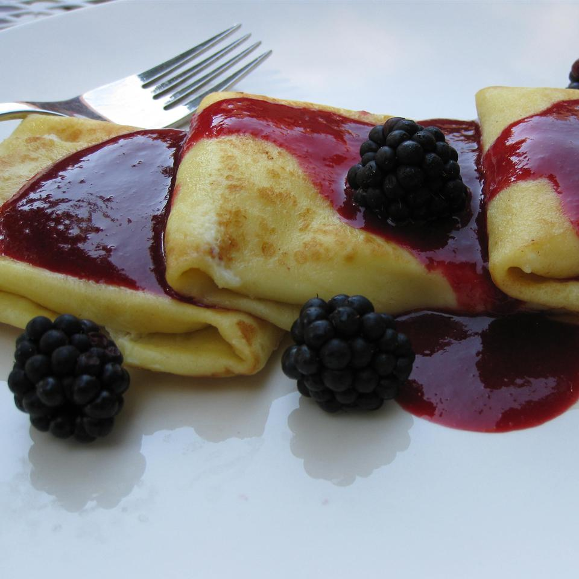

Cheese Blintzes

Description
If you're ever talking to someone who's been to, or used to live in, New York City, and the subject of cheese blintzes comes up, you will almost always see their face light up. While there are several steps, they're fairly simple, and so totally worth the effort.
Ingredients
Batter
- 3 large eggs
- 1 cup all purpose flour
- 1 cup milk
- 1/4 cup cold water
- 2 tablespoons vegetable oil
- 1/2 teaspoon salt
- 1/4 teaspoon vanilla extract
Filling
- 1 1/2 cups ricotta cheese, strained if wet
- 1/2 cup cream cheese
- 1 lemon, zested
- 1 large egg
- 2 tablespoons confectioner's sugar
- 1 pinch salt
- 1 tablespoon butter, or as needed
- 1 tablespoon confectioner's sugar, or as needed for dusting
Steps
-
Place 3 eggs, flour, milk, water, vegetable oil, sugar, salt, and vanilla extract in a blender. Blend until completely smooth, 1 or 2 minutes, scraping down sides as needed. Let batter sit at room temperature 30 minutes.
-
Whisk together ricotta cheese, cream cheese, lemon zest, egg, sugar, and salt in a mixing bowl. Mix together thoroughly. Cover and refrigerate.
-
Heat a 10-inch, non-stick skillet over medium-high heat. Spray or brush lightly with vegetable oil. Pour in about 1/4 cup batter. Immediately swirl batter around to coat bottom of pan. Cook until surface looks dry, about 1 minute. Flip crepe over to briefly cook other side, about 30 seconds. Remove to a plate. Repeat with the rest of batter. Stack crepes.
-
Preheat oven to 325 degrees F (165 degrees C). Lightly butter a baking dish.
-
Spoon 3 to 4 tablespoons of filling onto the crepe, about an inch from edge nearest you. Fold edge over filling and flatten slightly. Fold in both sides, then roll up crepe into a small filled rectangle, ending with the seam on the bottom, creating a blintz.
-
Melt butter in skillet over medium heat. Cook the blintzes until golden brown on both sides, turning gently, about 2 minutes. Transfer to buttered baking dish.
-
Bake in preheated oven to firm up the filling, about 12 minutes. Cool blintzes 10 minutes before serving. Dust lightly with confectioners' sugar.